ÉSAD at work
Cette série photographique en faux noir et blanc explore l’âme et l’atmosphère de mon école, l’École Supérieure d’Art et de Design d'Amiens.
Le choix de photographier que du noir et blanc permet d’exprimer la force des contrastes, sans couleur, l’attention se porte sur les formes, les ombres et la lumière qui révèlents un visuel graphique.
C’est une vision poétique et personnelle de mon école, comment je la voit.
Janvier 2024
Photographie
 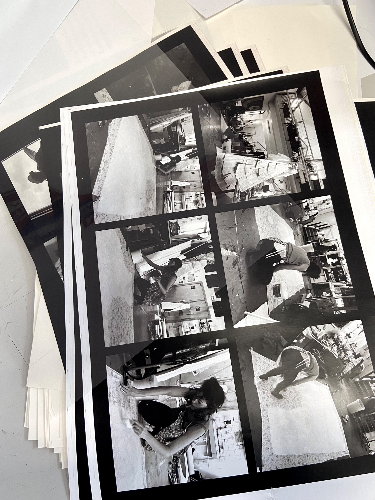
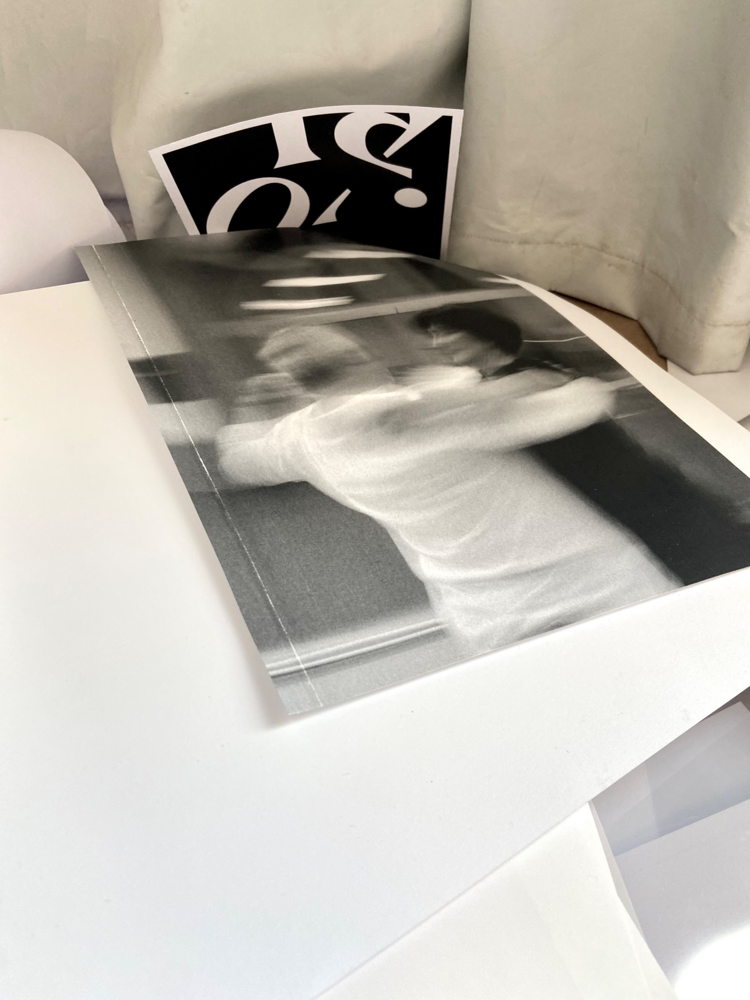
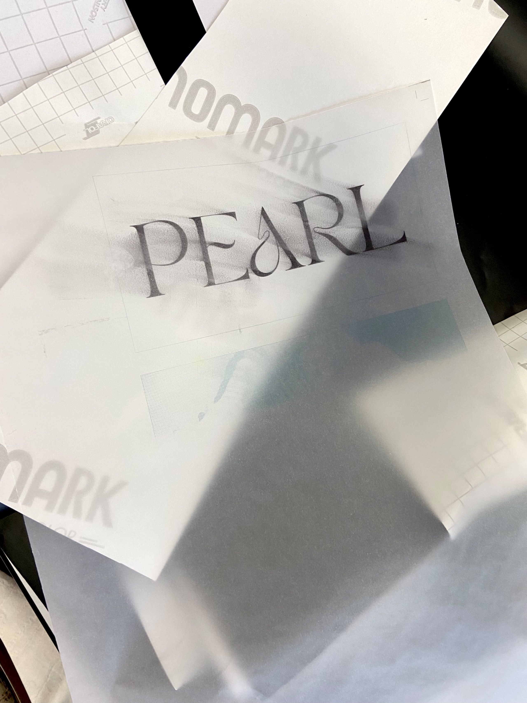
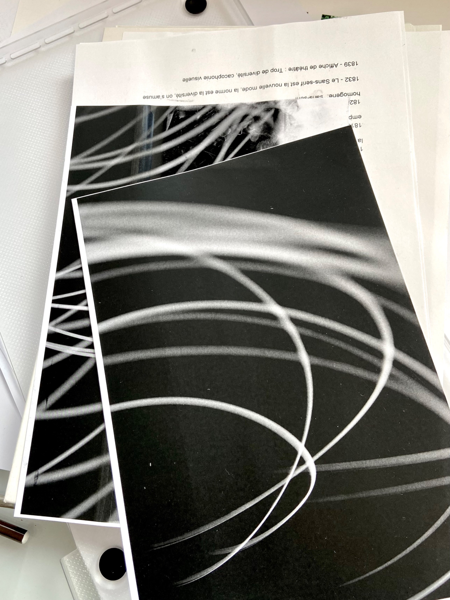
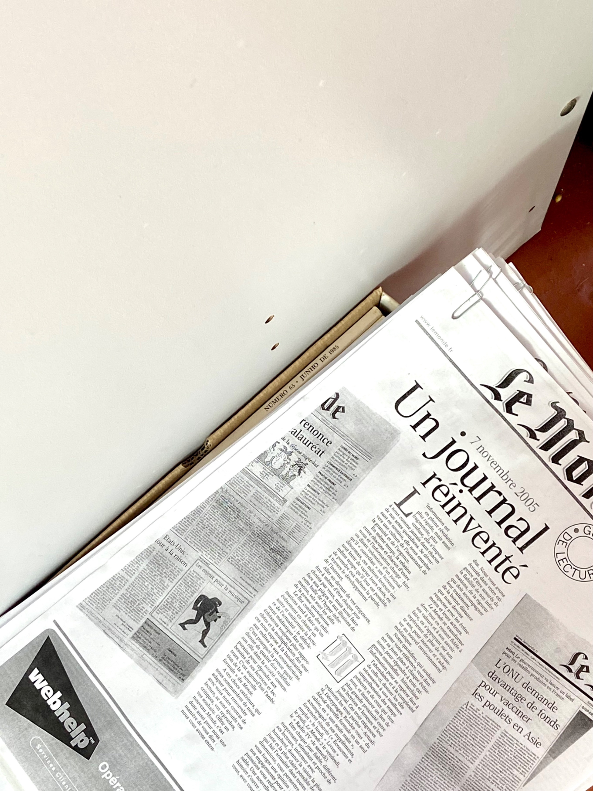
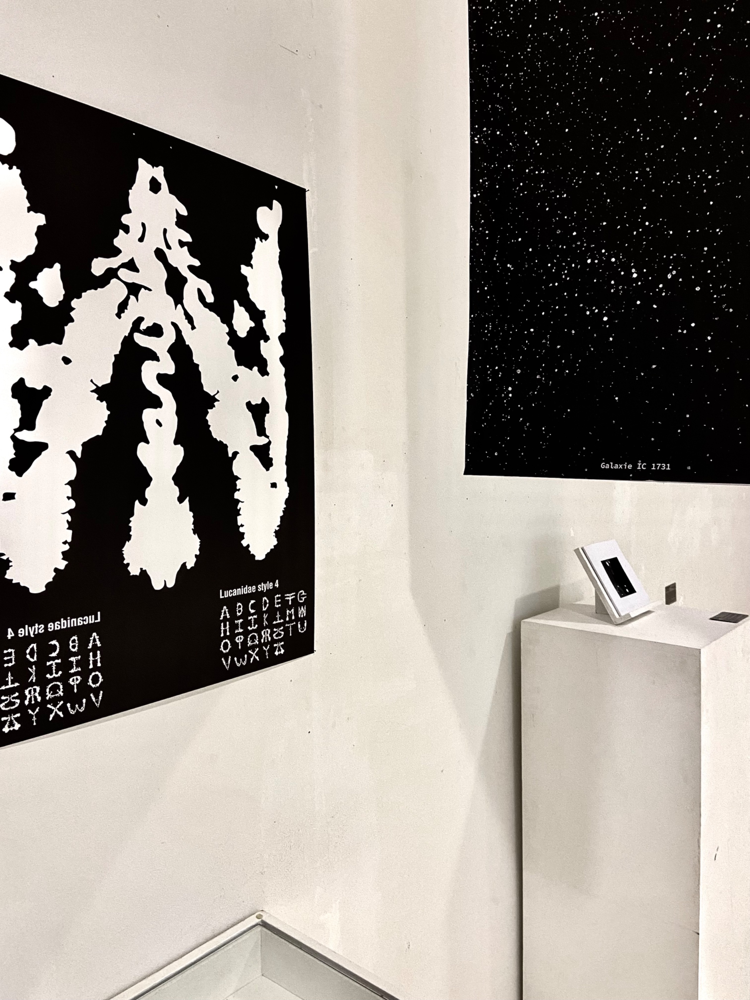
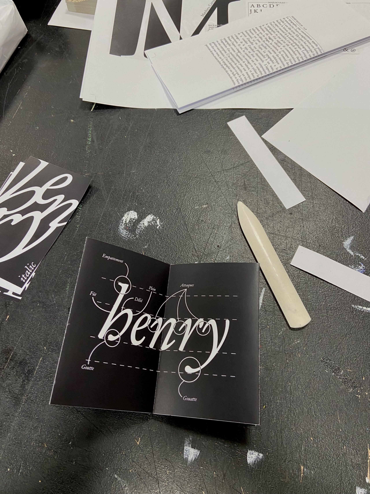
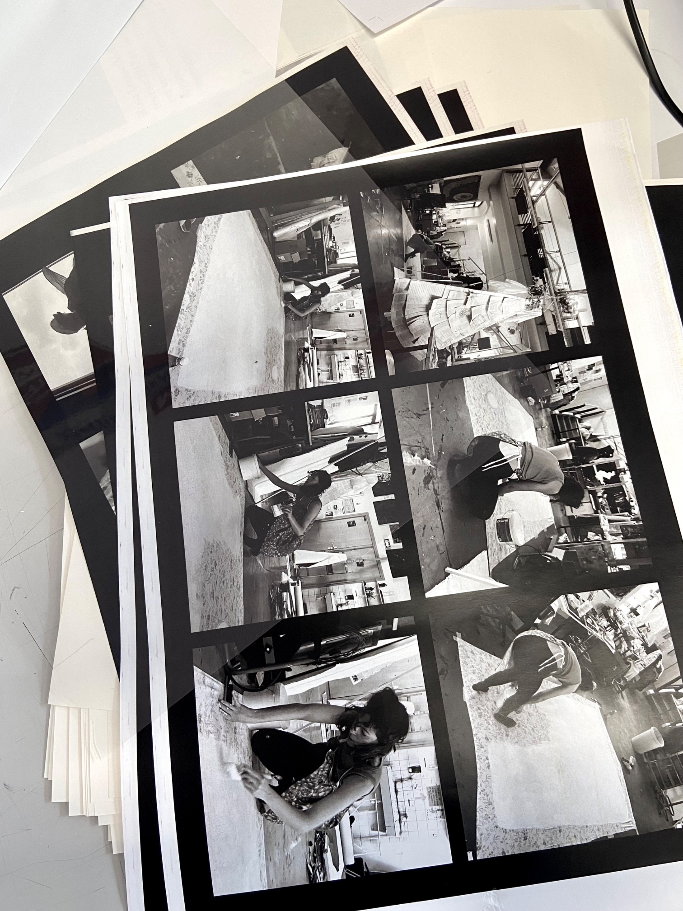
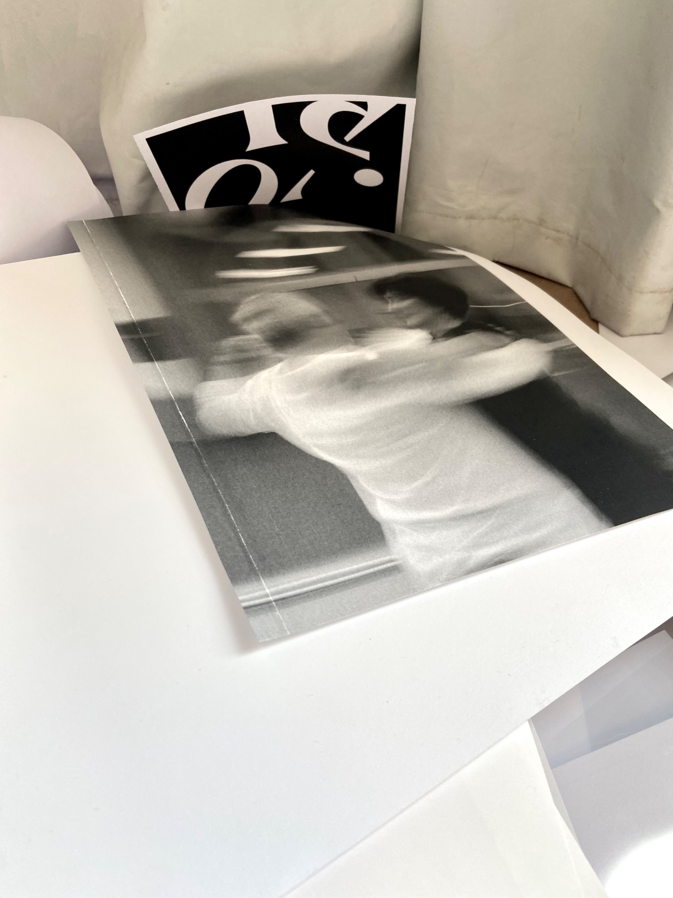
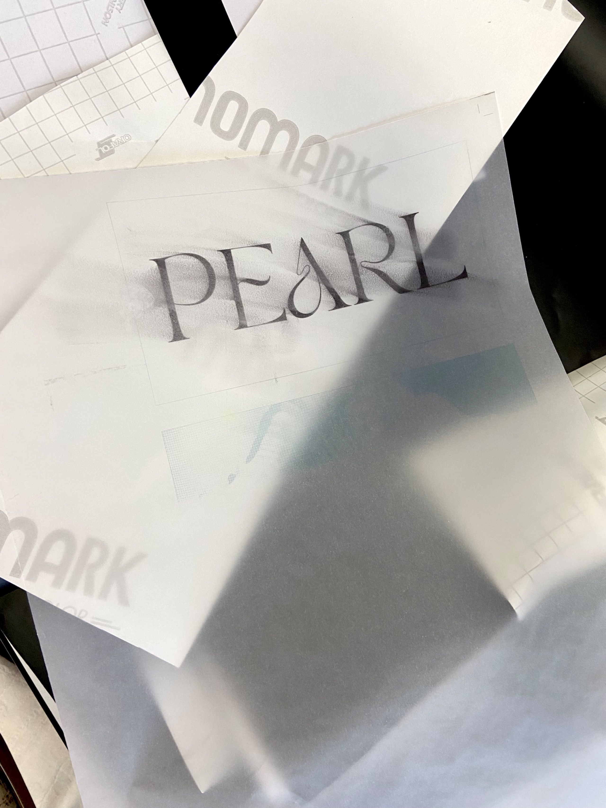
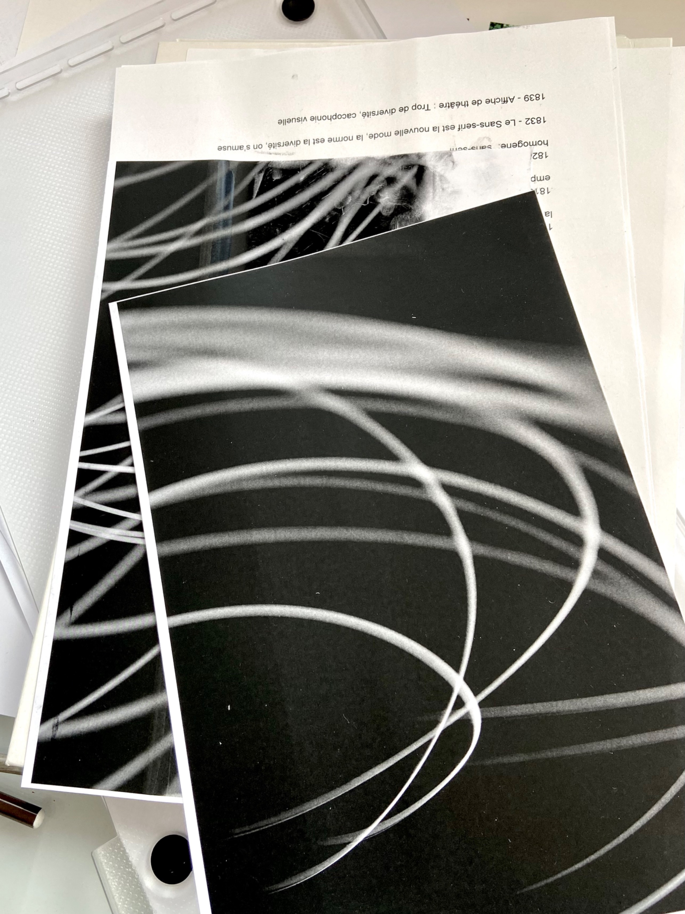
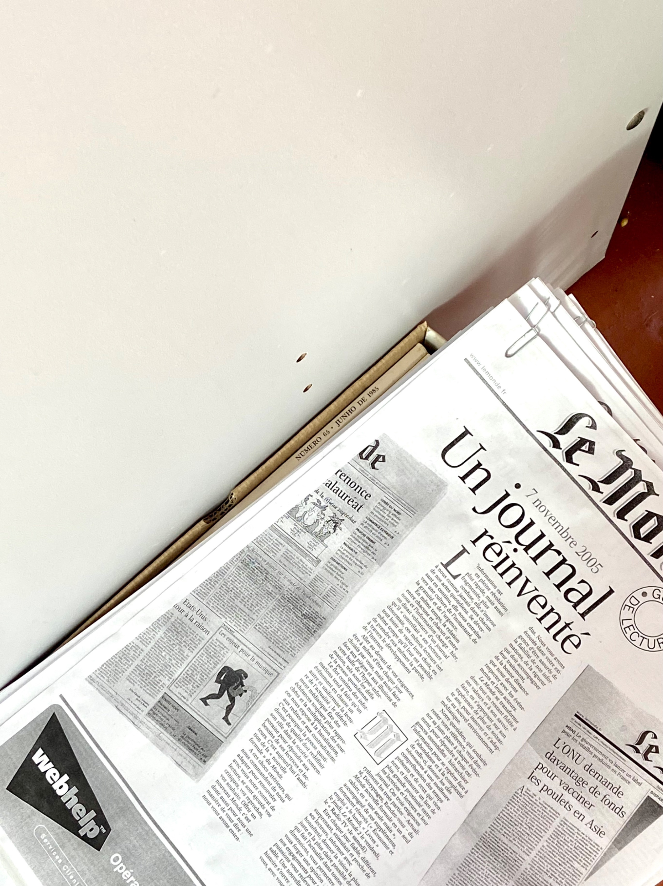
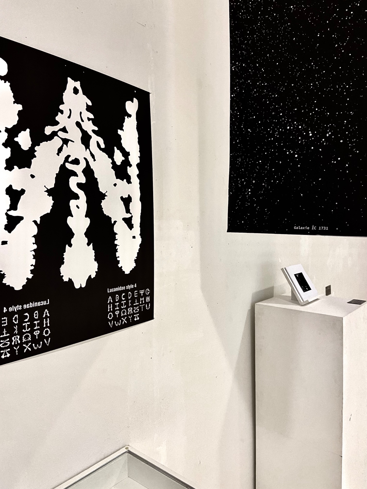
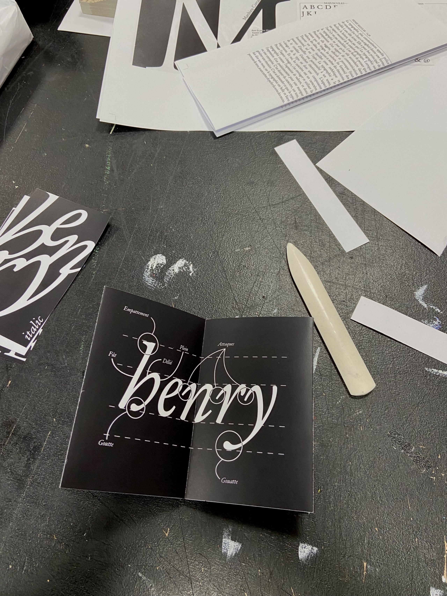